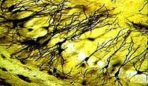
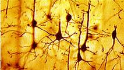
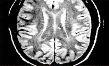

Neurotechnology is the set of tools that analyze and influence the human nervous system, especially the brain. It is a field of our interest which has grown as an off shoot of our active on-going research fields namely Complex Systems, Nonlinear Phenomena and Chaos. Main work being carried out by us in this field is modelling of higher functions of brain by analyzing electro encephelogram (EEG) as a time series.
Studies involve the calculation of certain invariant parameters (Kolmogorov entropy and correlation dimension) by analysing the time series using the technique of nonlinear dynamics. Studies have been carried out using the EEG recording from brain under pathological conditions like epilepsy and tumor. We analysed signals from 16 channel data and studied synchronization and coherence phenomena in brain during meditation.
